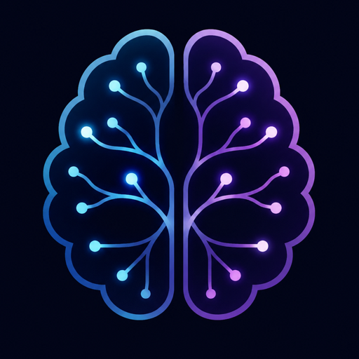

Biblioteca de transcrições · Síntese operacional

CORTEXEscolha por onde começar. O que você já leu desce pra baixo da lista sozinho — fica só o que falta.
0 de 11 lidos
- ⚠️Números e Ceticismoleia antes de tudoAuditoria de todos os resultados alegados na biblioteca — o número do título contra o que é dito dentro do vídeo.Fontes:
- 🤖Agência de IA e Automaçãoo caminho mais rápido para caixaVender agentes de IA e automações para empresas — sem produto próprio, sem audiência, sem tráfego pago.Fontes: NoCode StartUp, Well Pires, Luciana Papini +2
- 🛠️Ferramentas de IA na PráticaClaude, Claude Code e N8N no realComo criadores realmente usam Claude, Claude Code e Gemini Omni — o fluxo de trabalho de verdade, com bug e retrabalho.Fontes: Descomplicando Sites, Klebson Queiroz, Tiago Lemos +2
- 🧲Aquisição de Clientes para SaaSos primeiros 100 assinantesComo conseguir assinantes para um SaaS — os canais que realmente trazem os primeiros clientes, garimpados por engajamento entre 143 vídeos.Fontes: Y Combinator, Rob Walling, Bruno Okamoto +2
- 💰Serviços Digitais: a meta de R$1k/diatráfego, IA, ebook e prospecçãoO que realmente é preciso para faturar R$1.000 por dia com serviço digital — as contas, os canais de prospecção e o que a matemática diz sobre a meta.Fontes: Adriano Gianini, Rodrigo Vincenzi, Rodolfo Zanin +2
- 🌎Upwork e Freela Internacionalfaturar em dólarComo pegar freela em dólar no Upwork e afins — perfil, proposta, precificação e o que os relatos honestos mostram sobre os primeiros meses.Fontes: Mundo Freelancer, Attekita Dev, Lucas Guerra +2
- 💻SaaS e Produto Digitalrecorrência com IAConstruir e vender software com IA, sem programar — achar a ideia, montar o produto e a distribuição que os vídeos escondem.Fontes: Starter Story, Cakto, Caio Martins +2
- 🎯Low Ticket e Tráfego Pagoadquirir cliente pagandoComo adquirir cliente pagando por ele — 11 princípios de consenso e um método operacional em 8 fases.Fontes:
- 🧠Negócio Solo e MentalidadeHormozi e mentalidadeComo sair do zero operando sozinho, sem se sabotar.Fontes: Alex Hormozi, Simon Squibb / Pierce Lenny, Bruno Gabarra +1
- ✍️Copy, Criativo e Conteúdoo que vendeEscrever o que vende e produzir o que para o scroll.Fontes: Método VTSD / Leandro Ladeira, Henrique Oliveira, Silvio Roberto
- 📦E-commerce e Dropshippingo experimento honestoO tópico menor da biblioteca, com o vídeo mais honesto de todos.Fontes: Mark Tilbury, Rafa Souza, Ecommerce Puro +2
- Já lidos